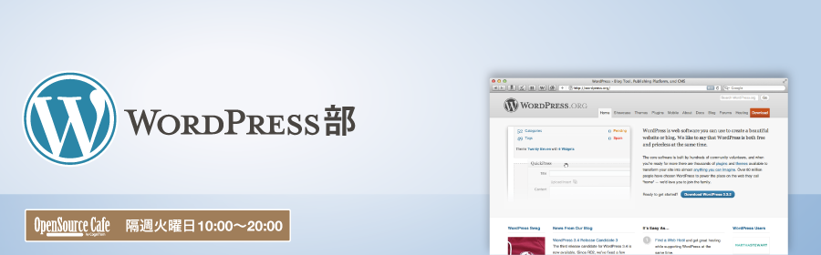

WordPressユーザーと、コワーキングしませんか？
WordPressは、オープンソースのブログ／CMS プラットフォーム。「部室」は、そのユーザが集う場所です。
これまでにWordPress部では、
などを行なってきました。皆さんのアイディア・要望お待ちしています。
2週間に1回のペースで、集って仕事/勉強したり、時にはセミナーを開いたりするのが、オープンソースの部室です。定期開催なので、初めての人も気軽に、ベテランさんも準備なしで気楽に、参加できます。
などなど、活用して下さい!